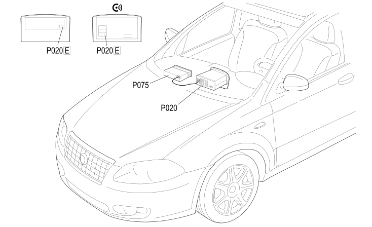

79 CHANGE CD
- Path
- Electrical equipment > 2 WIRING > 79 CHANGE CD
- Kind
- wiring harness
- Applies to
- all engines; all production periods
- Interactive page
- https://sloeber94.github.io/elrnDB-fCrm/en/#/194001851
Applies to: all engines; all production periods
